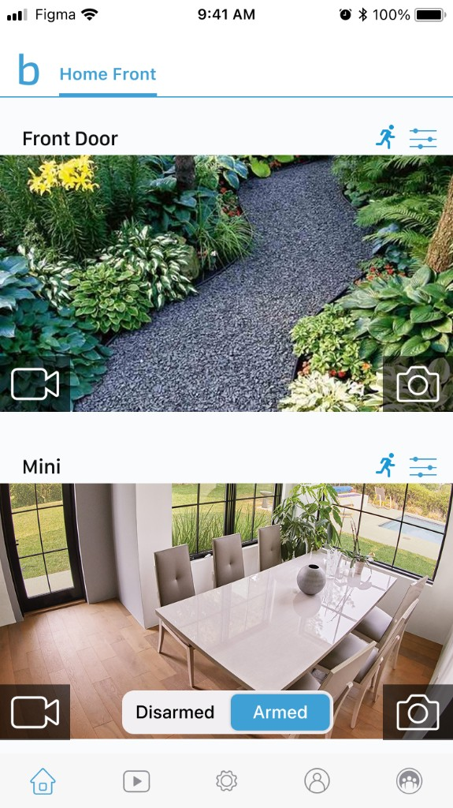
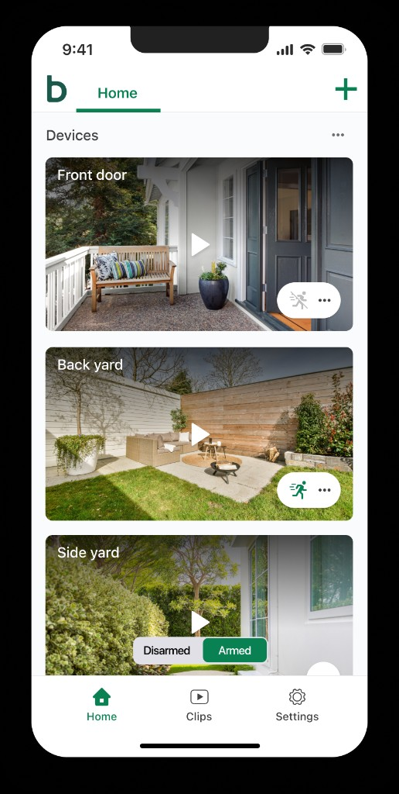
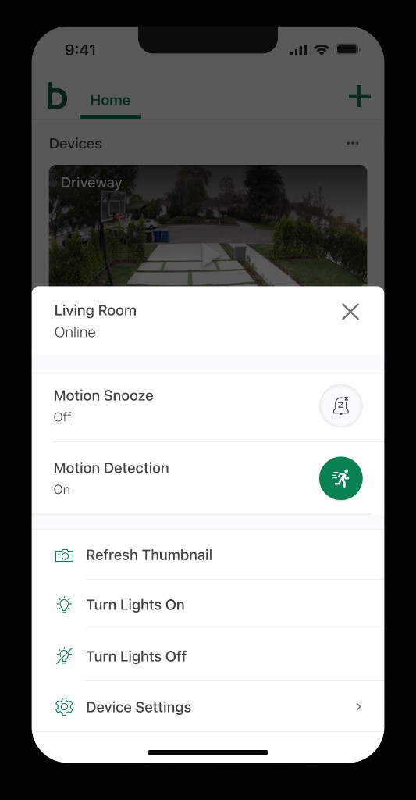
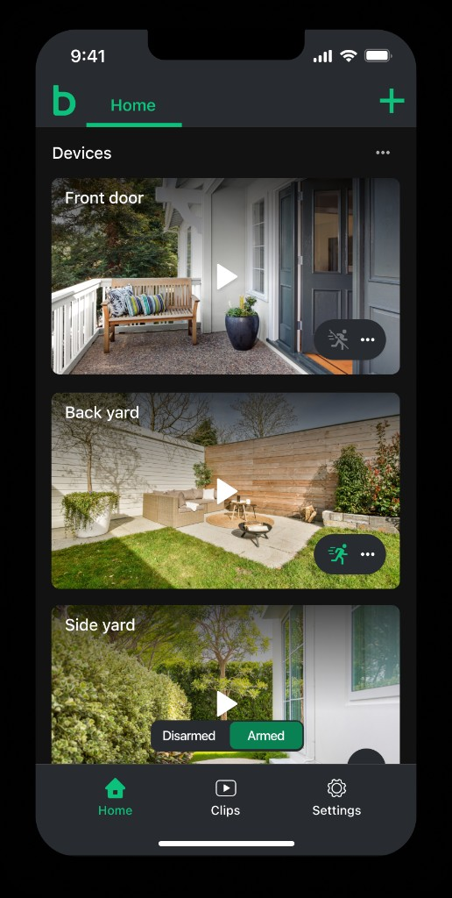
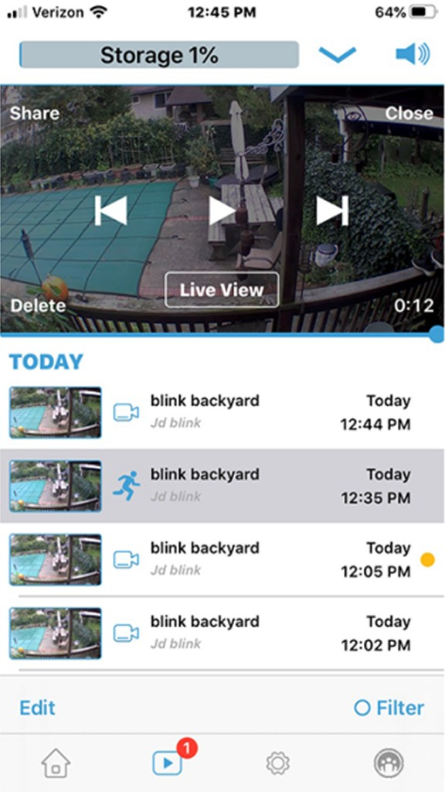
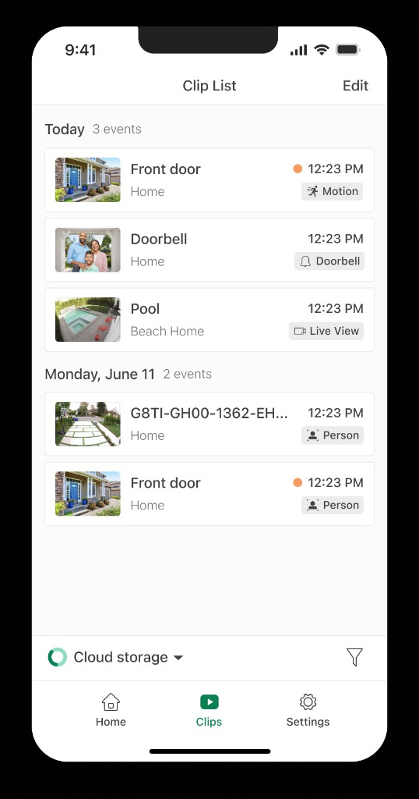
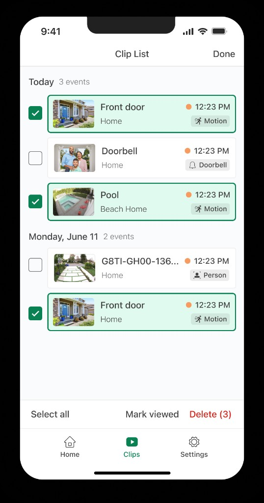

Background
Blink is a home security camera system used by tens of millions of customers to monitor their homes, receive motion alerts, and review recorded events. The mobile app is the primary way people interact with their cameras — checking live views, arming their system, and reviewing clips when something happens.
Over time, the app's interface had grown dated. While it remained functional, the visual language and interaction patterns no longer matched the expectations of modern mobile users. A redesign was needed to bring clarity, consistency, and a more polished feel to the experience.
The Challenge
We focused on two screens that sit at the heart of daily use in the app: the Home screen, which is the default landing page and houses access to all of a user's cameras, and the Clip List, where users browse recordings of events that occurred on their cameras. Together, these are among the highest-traffic pages in the entire application.
Redesigning them meant balancing a lot of competing needs. Customers needed quick access to live views and system controls, but also a scannable way to review dozens of clips across multiple cameras and locations. Any change had to feel familiar enough for existing users while still delivering a meaningfully better experience.
Our Goals
With so many customers depending on these screens daily, we set out with a clear set of goals to guide every design decision:
- Modernize the visual design with a cleaner, more consistent interface
- Improve scannability so users can find cameras and clips faster
- Surface the most important actions — live view, arming, and clip management — without cluttering the screen
- Support both light and dark mode with equal attention to detail
Home Screen
The previous Home screen presented cameras as a vertical list with small thumbnails, separate settings icons, and an arming toggle overlaid on the feed. It worked, but felt utilitarian — controls were scattered and the hierarchy between cameras, live view, and system status wasn't always clear.
The redesigned Home screen puts camera feeds front and center. Each device is shown as a large, immersive card with a prominent play button for live view. Motion detection status and quick actions are grouped into a compact control pill on each card, and system-level arming is surfaced directly on multi-camera views. A streamlined bottom navigation and refreshed header complete the look.

The previous Home screen

The redesigned Home screen
Device-level actions — like toggling motion detection, refreshing a thumbnail, or adjusting lights — were consolidated into a clean action sheet. This keeps the main view focused on the cameras while still giving users fast access to the controls they reach for most often.

A device action sheet for quick camera controls
Dark mode received the same level of care. Camera cards, navigation, and controls were designed to feel native in both themes — not simply inverted, but thoughtfully adapted for low-light use.

The redesigned Home screen in dark mode
Clip List
The Clip List is where users go to review what happened — motion events, doorbell rings, live view recordings, and more. The previous design combined an inline video player with a dense list of clips below it. Useful for playback, but difficult to scan when you just wanted to find a specific event.
The redesign separates browsing from playback. Clips are organized into clear date groupings with event counts, rich thumbnails, and descriptive tags for event type — motion, doorbell, person detection, and live view. Unviewed clips are marked with a subtle indicator, and cloud storage status is always visible at the bottom of the list.

The previous Clip List

The redesigned Clip List
Bulk actions were also rethought. Entering edit mode lets users select multiple clips across date groups, with clear affordances for select all, mark as viewed, and delete — making it much faster to manage a growing library of recordings.

Multi-select mode in the redesigned Clip List
My Role
As a designer on this project, I contributed to the visual and interaction design of both the Home and Clip List experiences. I worked closely with product and engineering to explore concepts, refine layouts, and validate designs against the needs of a large and diverse customer base.
This included competitive research, iterating on high-fidelity mockups in both light and dark mode, and collaborating on the details — from event type labeling to bulk selection patterns — that make these screens feel polished at scale.
The Result
The redesigned Home and Clip List screens bring a modern, cohesive feel to two of the most-used pages in the Blink app. Camera access is more immediate, clip browsing is more scannable, and everyday actions — arming the system, checking live view, managing recordings — are easier to find and use.
For tens of millions of customers checking their homes every day, these screens are the front door to the Blink experience. Getting them right mattered — and we're proud of where they landed.